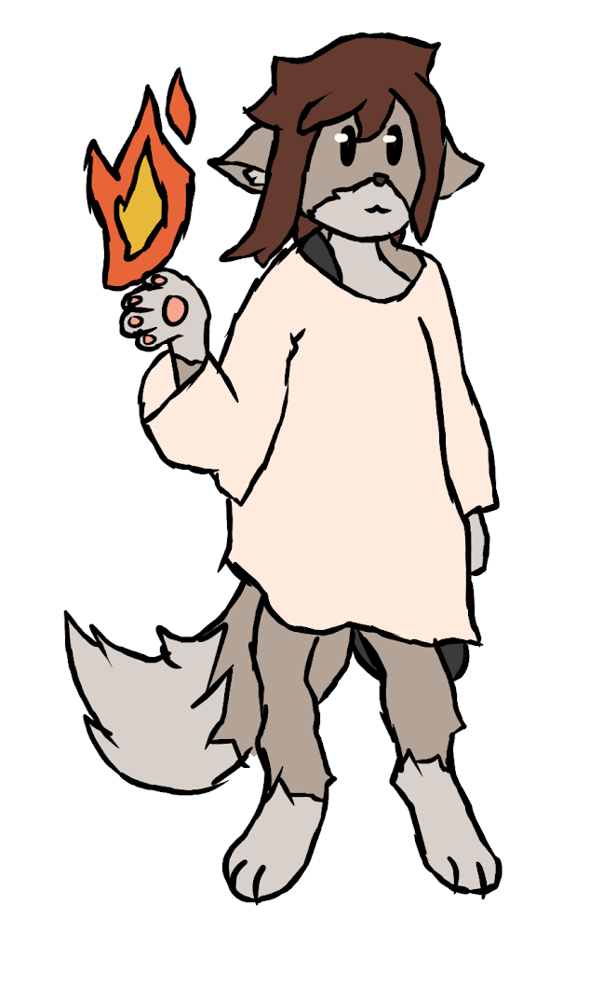
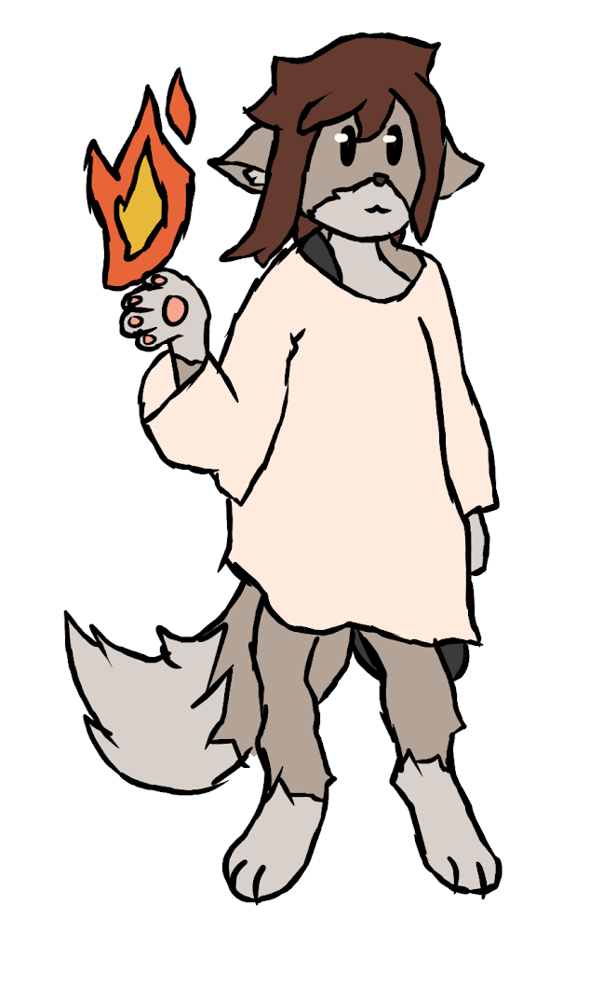
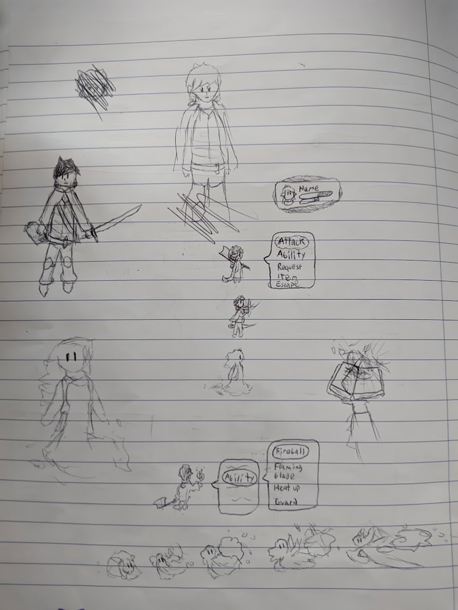
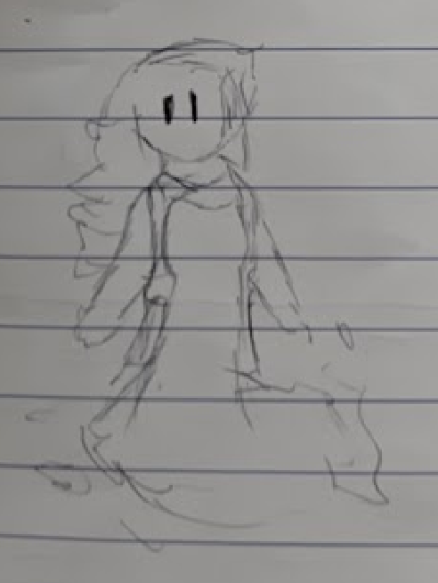
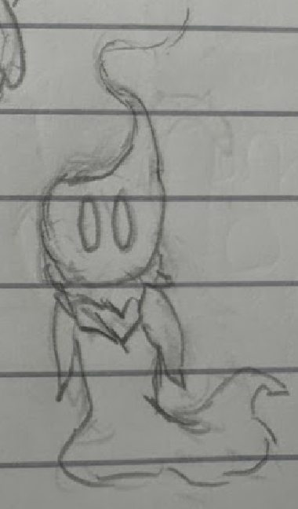
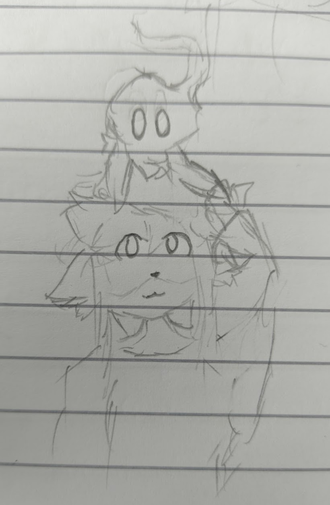

A young anthro girl named Mira Levenor find herself in a strange realm full of monsters and ruins, with a few people stuck there trying to survive.
As each day passes the sourrounding get more and more corrupted.
Follow her day to day life exploring the lost realm, fighting in turn-based battles and getting to know new people as they try to find a way to the outside world and discover the truth before it's too late.
During her adventures, Mira will keep a journal, giving her thoughts on everything that happens on a day-to-day basis.
I've been technically been making games since I was 9 on scratch, but who cares about that?
The only other real game I've made was a Pokemon fangame called "Pokemon Redder and Bluer", stupid name I know.
It was my interpretation as a 14 year old of what a Kanto game would look like 15 years after the events of the original.
I never finished it due to lack of motivation after a while, and it's now basically lost media to anyone but me since the Relic Castle website shut down.
Another game I have attempted to make was something I called "Project BZ". It mostly stayed as a concept, but it was a sci-fi RPG with a focus on action commands. I designed a lot of characters and locations for it, but having no real gamedev experience, the scope was way too high.
With Project BZ being such a dream project, I wanted to make a more down to earth RPG.
Of course any kind of RPG is still a huge project, and not what most people would recommend as a beginner game.
It was October of 2021 when I drew the first sketches of some of the character for Mira's Journal.
The first characters I made for this game were Mira, Daze and Alcine.
 

Mira was a young wolf girl with some fire powers who ends up getting mixed up in Daze's affairs.

Daze was meant to be a stereotypical hero, the usual leader of the party with a special destiny.



Alcine has changed a lot through development. What's stayed the same is that they're a spirit creature with a liquid body.
But originally they had a more mature look with something that resembles long hair. But I later decided to make them more like a child originally that grows along the journey.
These are some other early sketches related to the game:


In early 2022 I bought the RPG Maker MZ engine with the intention of using it to make this game.
The reason I picked it was simple:
I wanted to make a top down rpg that I thought was not too complex, and this seemed to be what this engine was designed for.
I worked on this version of the game for about 9 months, with some results.
(unfinished document)